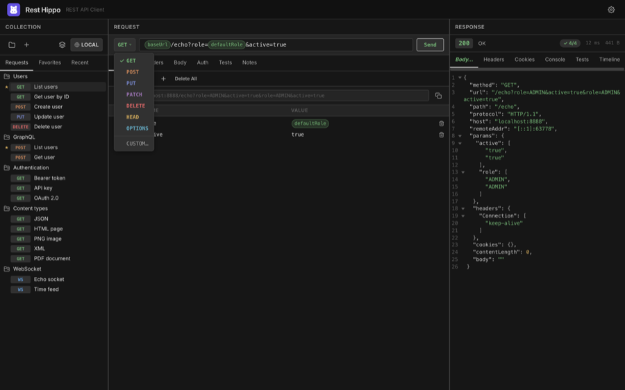

Getting Started
Installing
Rest Hippo ships as a native desktop app for macOS, Windows, and Linux. Download the installer for your platform, run it, and launch Rest Hippo — there's nothing else to set up. Your data lives in a local folder under your user profile, so requests, environments, and settings persist between sessions.
Rest Hippo keeps itself current: it checks for new releases after launch (and on demand via Help → Check for Updates…), downloads them in the background, and asks before restarting to install. See Settings → About & updates.
Building from source? See the project README —
make installthenmake debugruns Rest Hippo with hot-reload.
The interface
Rest Hippo is organized into three panels:

- Collections (left) — the tree of saved requests. Switch between the Requests, Favorites, and Recent tabs at the top, and press Cmd+F (Ctrl+F) while the tree is focused to filter it.
- Request (center) — the method selector, URL bar, and the tabs where you define query parameters, headers, the body, authentication, and captures.
- Response (right) — the response status and timing, plus tabs for the body, headers, cookies, console, and timeline.
The header holds two controls, from left to right:
| Control | What it does |
|---|---|
| 🌐 Environment | Shows the active environment (e.g. LOCAL); click to switch, right-click to reach the environments editor. |
| ⚙ Settings | Opens Settings — theme, fonts, the panel layout, proxy, and more. |
You can resize the panels by dragging the dividers between them, and Rest Hippo remembers the positions.
Sending your first request
Pick (or create) a request. Click a request in the tree to load it. To make a new one, click the + (New Request) button above the tree, or right-click a folder and choose Add Request.
Choose a method. Click the method button on the left of the URL bar (
GET,POST, …) and pick from the menu.
Enter the URL. Type into the URL bar. You can use
{{variables}}anywhere — Rest Hippo shows the resolved URL beneath the bar when Show URL preview is on (Settings → Appearance).Add query params, headers, or a body in the tabs below (all optional). See Building Requests.
Click
Send(or press Enter while the URL bar is focused).
The response appears on the right: the status code and text, the elapsed time, the response size, and the body — pretty-printed and syntax-highlighted by default.
Rest Hippo runs requests natively, not through a browser, so you're never blocked by CORS. Requests can reach
localhost, private networks, and any scheme the OS allows.
Diagnostics & logs
Rest Hippo keeps a rotating log of its own activity and errors in a logs folder
inside your data directory. It records lifecycle and error events — never your
secret values — and is your starting point if something goes wrong.
From the Help menu:
| Item | What it does |
|---|---|
| Reveal Logs | Opens the log folder in your file manager. |
| Export Diagnostics… | Saves a single .txt file containing Rest Hippo's version and build info plus the recent logs — ideal to attach to a bug report. |
If Rest Hippo ever hits an unexpected error it can't recover from, it writes the details to the log and shows a dialog before closing, so the failure is never silent.
One window at a time. Rest Hippo runs as a single instance to protect your data. Launching a second copy simply brings the existing window to the front instead of opening a duplicate.
Supporting Rest Hippo
Rest Hippo is free and always will be — there's no paid tier, license key, trial, or feature locked behind a payment. Every capability is available to everyone.
If the app saves you time and you'd like to say thank you, Help → Support Rest Hippo… (also linked from the About window) opens a donation page in your browser with a suggested $5 tip. It's entirely optional: a donation unlocks nothing, nothing is ever gated or nagged behind it, and the app never tracks or verifies whether you've given. Skip it with zero downside — the gesture is appreciated, never expected.
Where to go next
- Organize your work into collections and folders.
- Reuse values with variables and environments.
- Secure your requests with authentication.
- Dig into the response viewer.